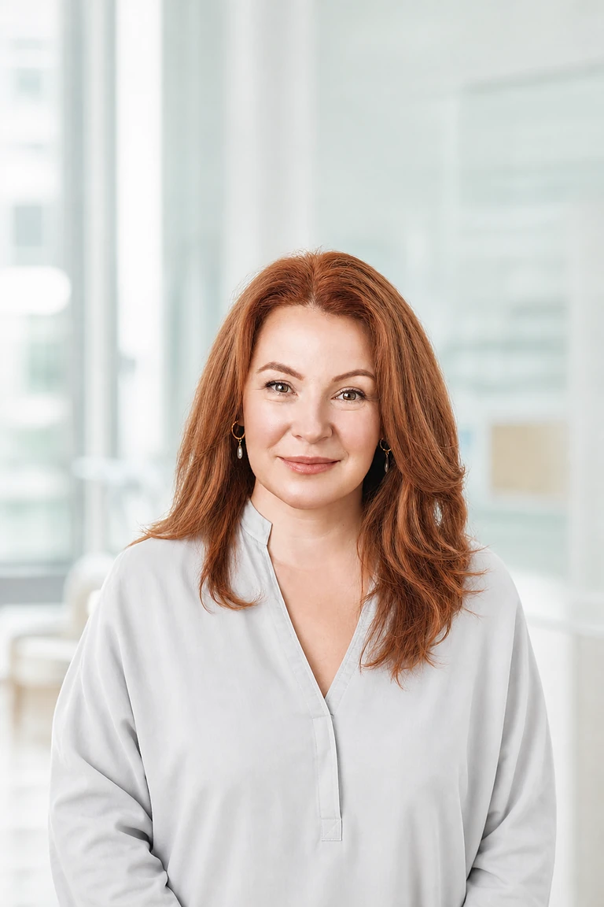

Вы рассказываете, что изменилось, когда это началось и что сейчас беспокоит сильнее всего.
Специалист центра диагностикиПерсональное направление
Биоэнергетик · личная работа после диагностики
Елена ВейсВаш специалист по восстановлению внутренней опоры
Иногда перемены чувствуются раньше, чем их удаётся объяснить словами: будто внутри стало холоднее, тревожнее, а привычная опора исчезла. Елена мягко помогает услышать эти сигналы, разобраться в ощущениях и восстановить контакт с собой.
Бережно и конфиденциально
Без запугивания
С уважением к вашим ощущениям

Энергетический почерк
Не бороться с собой.
Сначала — услышать.
Подход Елены строится вокруг трёх состояний: заметить, где нарушилось внутреннее равновесие; отделить собственные ощущения от навязанной тревоги; вернуть спокойный контакт с телом и собой.
01 Мягкое считывание состояния02 Работа с повторяющимися ощущениями03 Практика возвращения к себе
«Внутри каждого человека есть тихое место, где снова можно услышать себя. Моя задача — помочь вам к нему вернуться».
Когда подключается Елена
После первичной диагностики центра и согласования следующего шага.
Фокус работы
Усталость без ясной причины, внутренний холод, тревожный фон, повторяющиеся эмоциональные реакции и ощущение, что жизненная энергия словно уходит.
Границы
Работа биоэнергетика не заменяет врача, психотерапевта, психолога или юриста.
Пространство личной работы
От тревожного ощущения — к ясности и внутренней опоре
Елена уточняет реакции, ощущения и ситуации, в которых напряжение становится сильнее.
Вы получаете понятное резюме встречи и рекомендации без давления на продолжение.
Подготовка
Чтобы встреча была предметной
Не нужно готовить длинную историю. Достаточно зафиксировать три вещи: главную проблему, момент первых изменений и результат, который вы хотите получить.
Если есть острые физические симптомы, угроза безопасности или сильное ухудшение психического состояния, сначала обратитесь в профильную экстренную или медицинскую службу.
- Запишите 2–3 главных вопроса.
- Отметьте, когда состояние ухудшается или улучшается.
- Подготовьте рекомендации центра, если уже получили их.
- Не переводите дополнительные деньги под давлением или угрозами.
Профессиональный профиль
16 лет практики.
Более 4 300 консультаций.
Елена Вейс соединяет образование в области педагогики и консультирования с практиками осознанности и многолетней частной работой в биоэнергетическом направлении. Практикует в Берлине.
16лет практики
с 2010 года
с 2010 года
4 300+индивидуальных
консультаций
консультаций
80+групповых
интенсивов
интенсивов
1 000+учеников прошли
образовательные программы
образовательные программы
Путь специалиста
Педагогика и консультирование
Окончила Свободный университет Берлина. Работала педагогом и консультантом по личностному развитию.
Открытие частной практики
После нескольких лет изучения осознанности и энергетических методик начала частную практику, объединив консультирование с авторским подходом.
Углубление специализации
Европейская школа биоэнергетики, программа по энергетической психологии, курс медитативных практик и работа с эмоциональным выгоранием.
Консультации и образование
Индивидуальная и семейная работа, групповые интенсивы, онлайн-программа управления стрессом и выступления на фестивалях здоровья.
Специализация
- Энергетическая диагностика
- Работа с внутренними ограничениями
- Гармонизация эмоционального состояния
- Практики осознанности
- Индивидуальные и семейные консультации
Подтверждение
Диплом и сертификаты доступны в электронных копиях. Собрана база примерно из 180 письменных отзывов и подборка видеоотзывов.
Документы и отзывы публикуются только в подтверждённом видеДостижения
Провела более 80 групповых программ по состоянию и внутреннему ресурсу.
Создала образовательную программу по управлению стрессом.
Более тысячи участников прошли образовательные программы Елены.
Выступала на тематических фестивалях здоровья и альтернативных практик.
Следующий шаг
Вернитесь в тот диалог, где получили эту ссылку
Координатор центра подтвердит формат, время и дальнейший маршрут с Еленой. Не оставляйте чувствительные данные на странице.
Вернуться к переписке
Если ссылка открылась не из мессенджера, свяжитесь с центром по контакту, который вам уже предоставили.